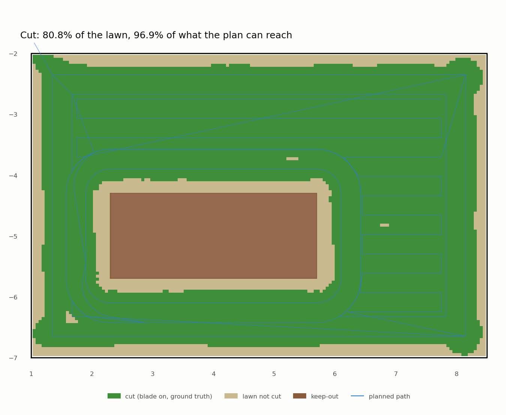
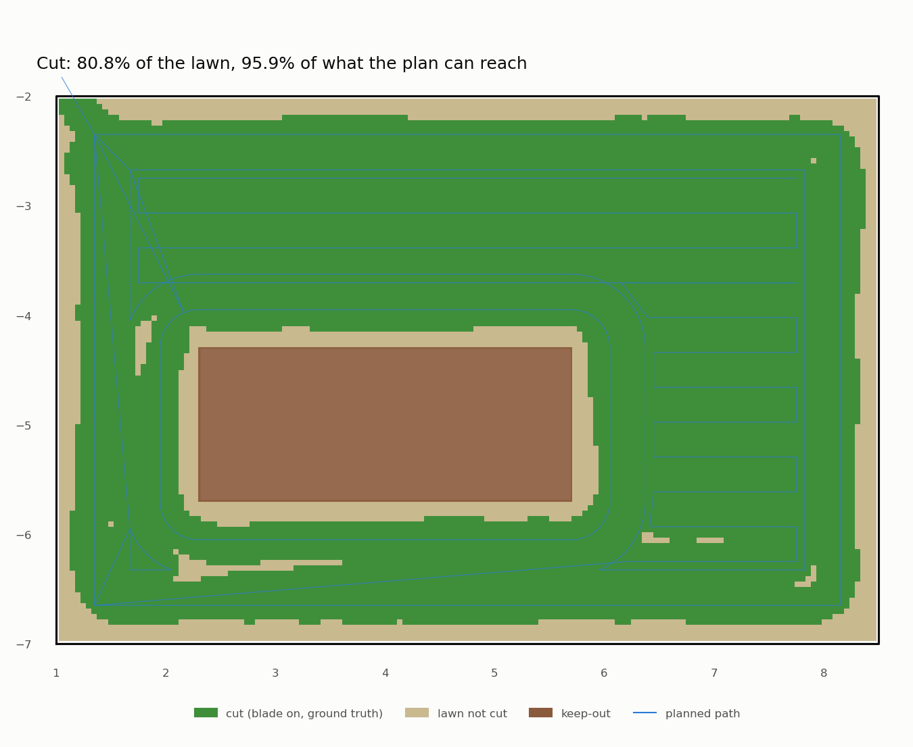

Mowing patterns: five runs to mow a lawn without touching the flowerbed
Phase 4 is the one Chris was waiting for: the robot plans a mowing pattern for a lawn and mows it. A planner turns the lawn (a GeoJSON polygon with keep-outs) into a path, a follower drives it on the RTK pose, and a report says, with ground truth, what got cut and whether anything went wrong. The first run finished the lawn. It also drove into the flowerbed 24 times. This post is about the four fixes between that run and a clean one, and about the tool that made the last fixes take seconds instead of minutes.
The pattern
The planner (mowbot_mowing/planner.py) is pure geometry with shapely, no ROS, so
it's unit-tested like any Python library:
- Headland laps first. Two laps around the inside of the lawn edge, the first at 0.35 m (half the robot's width plus 5 cm), the second one stripe further in. Edges first is what every good mower does: the stripes can then end short of the edge and turn on grass that's already cut.
- Stripes (boustrophedon, "the way an ox ploughs") at 0.324 m: the 0.36 m blade with 10% overlap. They end 0.75 m from keep-outs, because the robot's nose is 0.49 m ahead of the axle.
- Transits between them go round keep-outs on a visibility graph (Dijkstra over the free area's corners).
The follower (coverage_mission) is pure pursuit: aim at a point 0.5 m further along the path and steer on the arc
that reaches it. The blade spins up over 3 s before the robot moves (the twisted-square lesson
is not forgotten).
The report: what does "mowed" mean?
analysis/coverage_report.py paints a 5 cm grid. A cell is cut when the blade disc (Ø 0.36 m, 0.19 m ahead of the
axle) passes over it while the blade's measured speed is above 100 rad/s, using ground truth, not what the robot
believes. Then the checks:
| Check | Threshold | Why |
|---|---|---|
| Mission completed | mission_done |
not aborted, not stuck |
| Coverage of the reachable area | ≥ 95% | what the plan's blade path can cut |
| Keep-out incursions, body | 0 | the footprint never touches the flowerbed |
| Keep-out incursions, blade | 0 | obviously |
| Cross-track error (max) | ≤ 0.15 m | how far the robot wanders from the plan |
Whole-lawn coverage is reported too, but it can't reach 100%: the band along fences and beds that the body can't reach is trimmer territory, as on every robot mower.
Five runs
| Run | Body in the bed | Coverage (reachable) | Worst cross-track | What we changed after it |
|---|---|---|---|---|
| mow-test-1 | 24 | 95.9% | 0.146 m | keep-out "islands" + 10 cm margin |
| mow-test-2 | 0 | 95.7% | 0.157 m | never aim past a sharp corner |
| mow-test-3 | 0 | 96.2% | 0.152 m | corners = heading change over 30 cm |
| mow-test-4 | 0 | 95.1% | 0.158 m | pivot hysteresis, offline replay tool |
| mow-test-5 | 0 | 96.9% | 0.082 m (RMS 0.016) | PASS |
Run 1: the nose is not the axle
The body hit the flowerbed 24 times; the blade never did. A small diagnostic script listed every incursion with its time, position and speed, and two causes fell out:
- The deep ones (up to 32 cm²): a transit drove straight at the bed to reach the start of the lap around it, then turned 90°. The axle stopped exactly on the lap, 0.35 m from the bed. The nose, 0.49 m ahead, was over the bed.
- The grazes (under 1 cm²): pure pursuit cuts the corners of a curve a little, and 5 cm of margin wasn't enough.
The fix is a rule: never drive at a keep-out. Each flowerbed is now an island with two laps. The robot reaches the outer lap (0.72 m out) first. That's far enough that it can pivot safely: a pivot swings the nose's corners round a circle of radius √(0.49² + 0.30²) = 0.575 m. Then it slides onto the inner lap (0.40 m now, 10 cm of margin) while driving round, never pointing at the bed, and slides back out the same way.
How gentle does the slide have to be? Driving at angle θ to the lap puts the inner front corner 0.30·cos θ + 0.49·sin θ sideways of the path. My first try slid in over 1 m (θ ≈ 18°): that's 0.44 m, more than the 0.40 m lap. I didn't work that out by thinking; a new unit test did. It sweeps the robot's real footprint along every segment of the plan (and the full 0.575 m circle at every pivot) and asserts it never touches the bed. The slide is now 2 m long (θ ≈ 9°, 0.37 m) and follows the lap's curve instead of cutting across it as one straight chord.
Run 2: zero incursions.
Runs 2 to 4: chasing two centimetres
Runs 2, 3 and 4 failed on cross-track error by 2 to 8 mm. That's not a safety problem, but a threshold is a threshold, and each miss had a real cause:
- Run 2: pure pursuit aims 0.5 m ahead. Near a stripe end that point is already on the next stripe, so the robot started turning early and cut the corner. Fix: never aim past a sharp corner. Drive to it, pivot, carry on.
- Run 3: the corner fix worked (only 4 samples out of 4,000 above 10 cm), except on one tight curve made of many 10° steps. No single step looked sharp. Fix: "sharp" now means the heading turns more than 45° (later 30°) within the next 30 cm of path.
- Run 4: still 0.158 m. Here I compared the robot's own estimate with ground truth at the worst moments: both showed the same error, so localization (2 cm) wasn't to blame. The follower was.
The tool that should have come first
Every sim run costs about 7 minutes. Four of those to chase a follower bug is slow, and each one only tells you
that it failed. So I pulled the control law out of the ROS node into a pure function, steer(), and wrote
mowbot_mowing/replay.py: a 40-line kinematic robot (the sim's acceleration limits, 20 Hz, no physics) that drives
the follower over the whole plan in under a second.
It reproduced run 4's problem immediately (0.133 m, offline) and printed the moments around it:
t=71.60 (1.35,-2.41) v=0.00 w=-0.60 pivoting at the corner...
t=71.80 (1.38,-2.41) v=0.20 w=-0.61 ...stops pivoting at 40° off and drives away at an angle
t=72.20 (1.52,-2.45) v=0.50 w=-0.45 full speed, still swinging wide
The pivot ended as soon as the heading error dropped under 40° (0.7 rad), and the robot left the corner at an angle.
The next vertex was a 45° jog, and the "sharp" test was > 45°, so it didn't slow down either. The fix is
hysteresis, the same idea as experiment #1: start
a pivot above 40°, end it only below 6°. And corners now count from 30°. Offline worst case: 0.059 m. The price is
time: the careful pivots make the replay about 20% slower.
The replay is now a unit test (test_replay.py, threshold 0.08 m), so a follower change that gets sloppy fails in
make test before anyone spends a sim run on it. The sim stays the judge, since it has slip, EKF lag and real
dynamics, but it no longer has to be the debugger.
The coverage map

Run 5. Green is grass the blade actually passed over (ground truth, blade at speed), tan is grass it didn't; the blue line is the plan. 96.9% of what the plan can reach got cut; the tan band around the edges and the bed is the 17–22 cm the body can't reach. It took 524 s of sim time against run 4's 405 s: the careful pivots cost 30%, and buying some of that back (faster pivots, smoother joins) is on the list. For comparison, run 1, the one that drove its nose into the flowerbed (its inner lap was 0.35 m from the bed, reached nose-first):

And then the back yard
With the test patch passing, I pointed the planner at the full L-shaped back yard (257 m², the flowerbed and a tree) and checked it offline first: footprint sweep plus replay. It was safe, but 32% of the path was transit. Stripes cut in two by a keep-out were mowed nearest-piece-first, and the leftovers had the robot criss-crossing the yard to collect them.
The fix is the textbook one, boustrophedon cell decomposition: walk down the rows, and wherever a row splits into
two pieces (a keep-out) or two pieces merge, start a new cell. Inside a cell every row is one unbroken stripe, so it
mows end to end as a snake. Then go to the nearest unmowed cell. Transit fell from 360 m to 49 m, and the replayed
mission from 52 to 39 minutes. test_replay.py now fails if the back yard's transit share goes above 10%.
The sim run of the back yard is next.
What I learned
- A robot is a shape, not a point. The planner reasoned about the axle; the flowerbed met the nose. Every geometry check now uses the real footprint, and the pivot circle where the robot turns.
- Reach for a cheap simulator of the expensive simulator. Gazebo answers "does it work?". A 40-line kinematic model answers "why not?", a thousand times faster.
- Thresholds that fail by millimetres are still worth chasing. Each near-miss here was a real behaviour (aiming past corners, missing tight curves, leaving pivots early), and fixing them halved the typical error.
Next: the back yard in the sim, and a battery that runs down, so the mower has to go home.